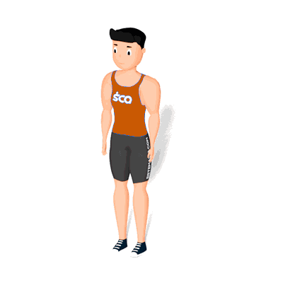

Afundo Alternado

O exercício irá trabalhar o fortalecimento e hipertrofia dos músculos do glúteo e quadríceps.
Ficha Técnica
Tipo: Musculação
Grupo Muscular: Perna
Aparelho: Nenhum
Músculos: Nenhum
Como realizar
- Pés afastados na largura dos quadris;
- Mantenha o queixo paralelo ao chão e um arco natural na lombar;
- Contraia o abdômen e com a perna direita de um passo largo para trás;
- Desça os quadris até que o joelho da frente forme um ângulo de 90° graus. Pare embaixo e volte lentamente para a posição inicial;
- Repita o mesmo movimento, agora dando um passo para trás com a perna esquerda;
- Realize as repetições indicada pelo professor(a) alternando entre a perna direita e esquerda.
 RC STORE
RC STORE